|
C-Menu v0.2.9
User Interface Toolkit
|
|
C-Menu v0.2.9
User Interface Toolkit
|
The complete documentation for C-Menu is now available in HTML format. You can view it by clicking the URL above or download it.
This comprehensive documentation provides detailed information about the features, usage, and configuration of C-Menu. It includes examples, screenshots, and explanations to help users understand how to effectively utilize C-Menu for their applications. The HTML documentation is designed to be user-friendly and easily navigable, making it a valuable resource for both new and experienced users of C-Menu. You can access the complete documentation extracting the contents of C-Menu-Docs.tar.xz with the following command:
To extract the contents of the C-Menu documentation archive, use the following command in your terminal:
To view the documentation, open the index.html file in the html directory with your web browser:
The screenshots below are practical examples from the C-Menu Exercises. This is a new section that will be updated with more examples as they are developed. The exercises are designed to demonstrate the capabilities of C-Menu and provide users with hands-on experience in creating menus,forms, and pickers using the C-Menu framework. Each exercise will include a description of the task, the corresponding configuration files, and screenshots of the resulting interfaces. These exercises are intended to help users understand how to utilize C-Menu effectively and inspire them to create their own custom interfaces for their applications. Stay tuned for more updates in the Exercises section!
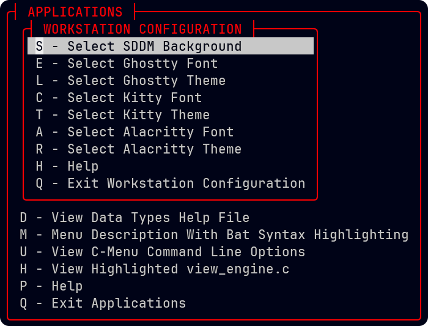
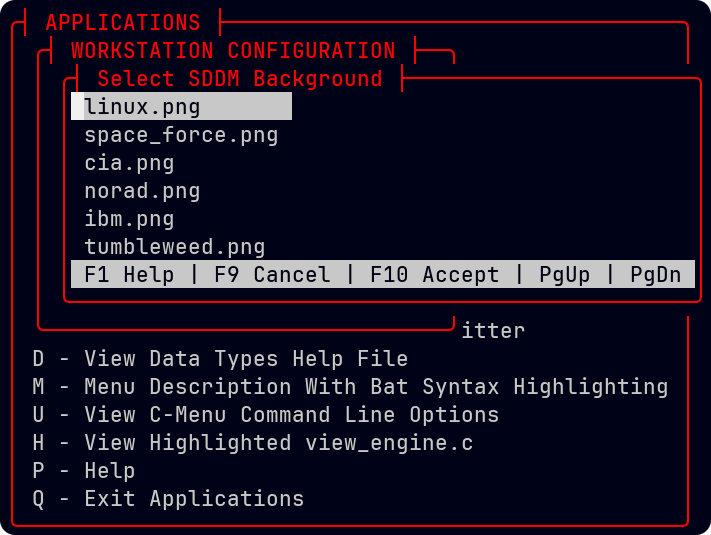

C-Menu is a lightweight, flexible, and easy-to-use suite of programs for creating a sophisticated user interface for your applications. Menus, Form, Pick, and View, using a classical text-based terminal interface(TUI) for applications running on Linux and Unix-like operating systems. C-Menu is designed to be simple to use while providing powerful features to implement menu driven frameworks for applications.
This is a real TUI, and though we may add a GUI front-end in the future, we won't abandon the super-responsive, low-overhead, and universally compatible text-based interface. It's here to stay, and it's perfect for a wide range of applications, from simple command-line tools to complex system administration utilities. C-Menu is ideal for developers who want to create intuitive and user-friendly interfaces without the need for complex GUI frameworks. With C-Menu, you can easily design and implement menus, forms, and pickers that enhance the user experience and streamline interactions with your applications.
While we do support mouse input, we realize that hardened coders like you prefer the blinding speed you can achieve with the keyboard. That's why we never give the keyboard a back seat, and why we provide navigation with familiar h, j, k, and l, the way God intended. We also support more conventional navigation via arrow keys, page-up, page-down, home, and end keys. The idea is to provide you and your users with comfortable, intuitive, and convenient navigation.
And, don't let the name fool you. C-Menu is not just a menu system, it's a comprehensive user interface framework designed to enhance your interaction with applications. It provides a structured way to navigate through application hierarchies, manage forms, select objects, and view data efficiently. And, it does so with style, offering a visually appealing interface that boosts comprehension through color.
Menu - Navigate Application Hierarchy
Form - Field Entry, Formatting, Validation, and Editing
Pick - Select Objects From Lists and Tables
View - Search, Format, and Display Data
RSH - Expeditious Root Privilege On/Off
CKeys - Diagnose Mouse and Keyboard Issues
lf - Select and List Files Using Regular Expressions
Cast some light on dull information with C-Menu's vibrant colorization features. With support for 24-bit true color ANSI and HTML-style six-digit hex color codes, you can customize your interface to suit your preferences. Whether you want to highlight important information or simply make your terminal more visually appealing, C-Menu has the tools you need.
C-Menu is more than just a tool; it's a gateway to a more efficient and enjoyable computing experience. Whether you're a developer looking to create intuitive interfaces or a user seeking a more engaging way to interact with applications, C-Menu has you covered. Dive in and explore the possibilities!
At the top of the stack is C-Menu Menu, which reads a simple description file like the one below and displays a colorful and easy-to -follow menu to the user. When the user selects an item, with either keyboard or mouse, C-Menu executes the corresponding command. It's like writing shell scripts, but with a snazzy menu interface.
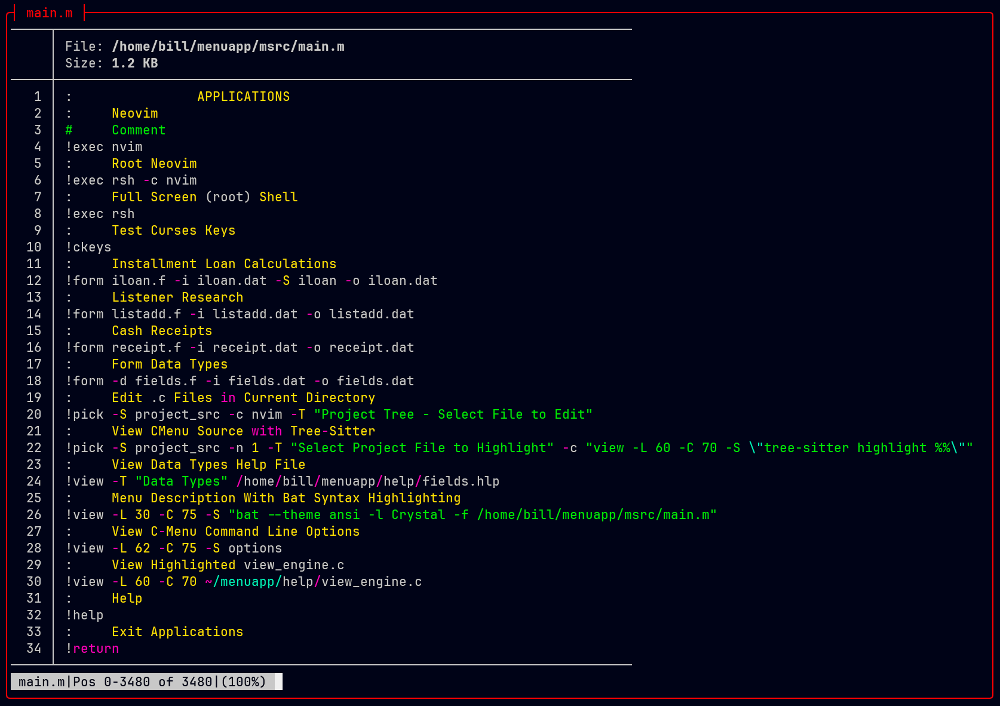

From the above examples, you can get an idea of how C-Menu works. Examine line-21 in "main.m" above. C-Menu Menu starts C-Menu View, which in turn executes "tree-sitter highlight view_engine.c". Tree -Sitter doesn't need to know anything about C-Menu View. It just sends output to it's standard output device, which happens to be a pipe into C-Menu View's receiver. C-Menu View maps Tree-Sitter's output to the Kernel's demand paged virtual memory and you get:
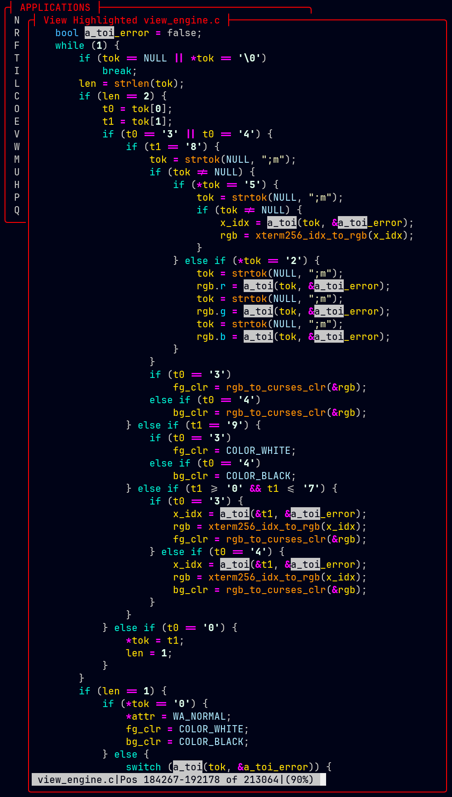
With C-Keys, you can diagnose and resolve keyboard and mouse issues quickly and easily. Just press a key and get the Octal, Decimal, Hexadecimal, the Escape Sequence Binding, and the NCurses Identifier. It's definitely easier than rummaging through hardware documentation and NCurses header files. It's also a good way to identify which keys are reserved by your terminal emulator, and gives you the specific key codes so you can easily add your own Extended NCurses keys.

 C-Keys also provides diagnostics for mouse actions and geometry.
C-Keys also provides diagnostics for mouse actions and geometry.

Just add hot water, stir, and Bob's your uncle, you have soup! 😀
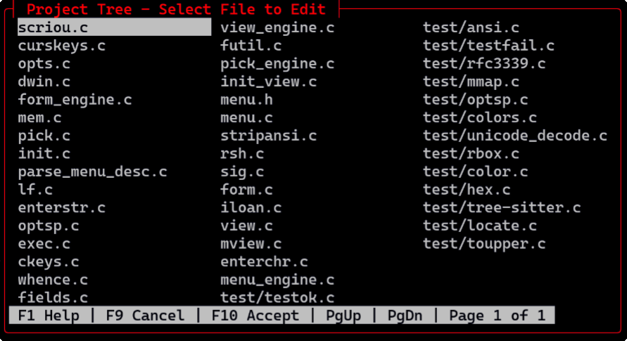
Pick provides a list of objects from arguments, piped input, or a text file. The user selects an object by using cursor movement keys, up, down, left, right, page-up, or page-down and pressing the space bar. Alternatively, the user can use the mouse and click on the object. When finished selecting objects, the user presses the Enter or F(10) key. If the "number_of_selections" variable is set to 1 (one), Pick will assume the user is finished and perform the specified action. Output can be piped to standard output, or provided as arguments to an executable file specified in the description file.
Here's a simple way to use Pick:
Pick a file to view using "lf", a utility to search for files using regular expressions, and which is included with C-Menu:
Execute a program or script on a picked file:
Note that the syntax for "lf" (list files) is not similar to Unix "ls".
The usage of "lf" is:
If you type "lf \*.c", it will fail for lack of a valid regular expression. That's because "ls" uses shell expansion, while "lf" uses regular expressions. Find supports regular expressions, but such a comprehensive program carries a penalty in size and overhead. "lf" is streamlined to provide input for a picker.
FORM is a lightweight and flexible form handling library designed to simplify the process of creating, validating, and managing forms.
It provides a straightforward API for defining form fields, handling user input, and performing validation checks.
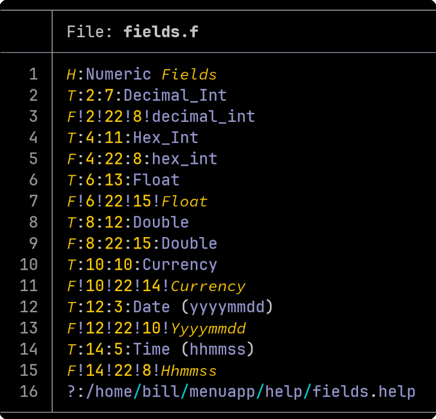

FORM displays data entry forms based on a description file. It allows users to input data in a structured manner. The entered data can then be processed by a specified command or script. Internally, the numeric entries are converted to binary integer, long, float, or double.
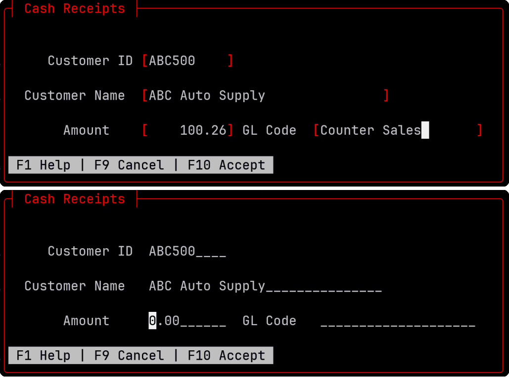
The two Cash Receipts entry forms above are identical except the top form has field brackets turned on and the bottom form has fill characters set to underscore. This is a simple configuration option from the command line or the configuration file.
If you make a mistake, in the form description syntax, as I did below, you will get a notification pinpointing the problem. In this message, we can see that the format field on line 3 of "receipt.f" is invalid.
I have a "3", and it should have been "String". The corrected line would be: "F!2!18!10!String".

Need quick and easy Cash Receipts, General Journal, or wedding invitation list? FORM has you covered. The application shown above took about 10 minutes from design to test. It doesn't post transactions, or keep running balances yet, but that's why we have people like you.
FORM also makes a great front-end for SQL database queries.
As you can see, the description file is straightforward and easy to read. Each menu item consists of a label and a command to execute. The label is displayed in the menu, and the command is executed when the user selects that item.
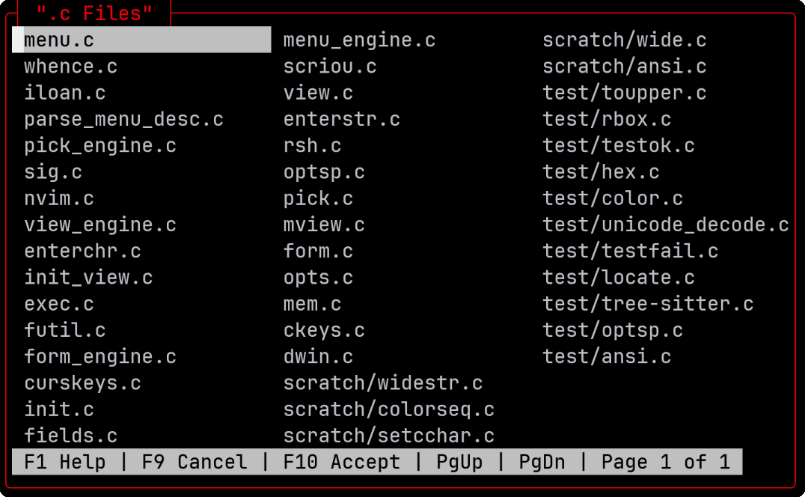
Here's just one example of how easy it is to create useful programs with the C-Menu Form facility.

 We hope you find C-Menu useful for your projects. It's a powerful tool that can greatly simplify the process of creating text-based user interfaces for your applications.
We hope you find C-Menu useful for your projects. It's a powerful tool that can greatly simplify the process of creating text-based user interfaces for your applications.
VIEW is an easy-to-use text file viewer that allows users to view text files in a terminal environment. It supports basic navigation, regular expression search functionality, horizontal scrolling, ANSI escape highlighting, Unicode, and NCurses wide characters. VIEW can be invoked from within MENU, FORM, or PICK to provide contextual help or stand -alone, full-screen as a system pager.

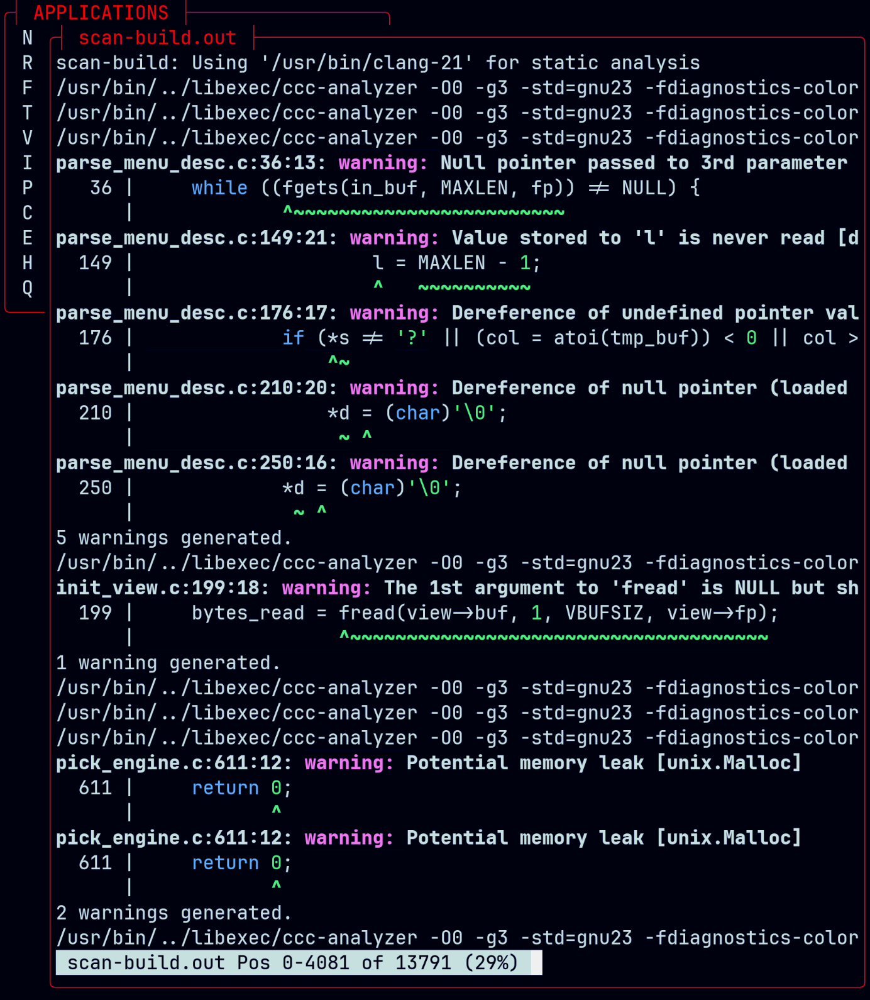
One especially useful feature of View is its incredible speed with large text files, like system logs. View can open and display multi-gigabyte text files almost instantaneously. Seek from beginning to end of a 1 gigabyte file takes a few milliseconds.To use View as your system pager, add the following line to your shell configuration file (e.g., .bashrc or .zshrc):
You can also filter manual pages through ~/menuapp/msrc/man.sed to colorize underlined emboldened, and italicized text. This sed script is included with C-Menu. To use it, you can run the following command in your terminal:
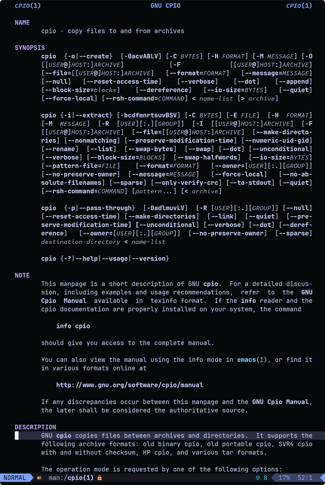
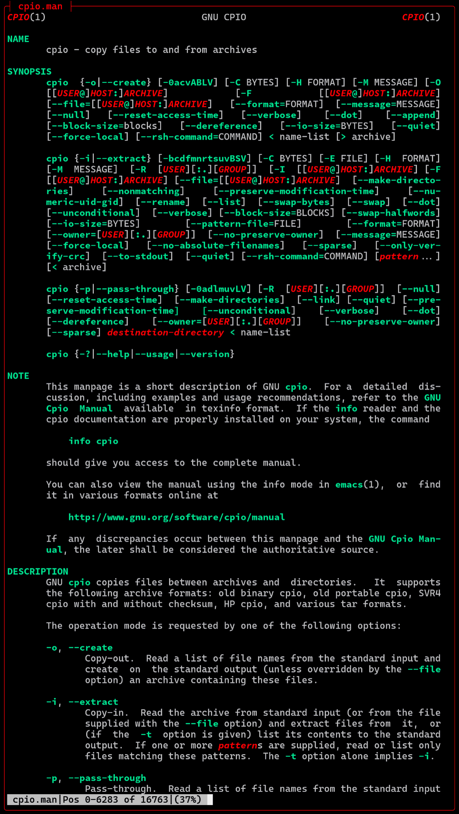
For the screenshot above, I used the "Man" command, which is a function in my .bashrc.
This function formats the manual page for UTF-8 output, pipes it through the colorizing sed script, and then opens it in View.
I don't know about you, but I find colorized manual pages much easier to read. The different text styles help to distinguish between various elements, making it easier to find the information I need. I also modified the underline ([4m]) to red-italics-bold ([31;3;1m) because I find that easier to read.
"all" of View's file I-O on lines 22 and 12.
 In technical parlance, I'll explain precisely how it works. See if you can follow me. 😁
In technical parlance, I'll explain precisely how it works. See if you can follow me. 😁
View's File I-O subsystem does three things:
View is blazingly fast because it leverages the Kernel's demand paged virtual memory system. When a file is opened, View maps the file into the process's virtual address space using the mmap system call. Zero-copy I-O is achieved by mapping the file directly from kernel address space.
When View needs to access a byte at a specific position, it simply calculates the corresponding memory address based on the file offset and reads the byte directly from that address. If the required page is not already in memory, the Kernel automatically handles the page fault by loading the necessary data from the file into memory. This approach eliminates the need for explicit read and seek operations, and copying data to the processes memory, resulting in faster access times and reduced overhead.
Horizontal scrolling for long lines. View writes output to a virtual screen, a Ncurses pad, to accommodate lines longer than the physical screen.
View has full support for Unicode, translating ASCII text and multi-byte-sequences to wide characters (wchar_t), and wide characters and ANSI SGR sequences to complex characters (cchar_t). The complex characters combine displayable characters plus attributes, such as bold, italic, underline, reverse, and foreground and background colors. NCurses can display more than 16 million colors.
View supports mouse wheel vertical scrolling.
When using utilities such as "tree-sitter highlighter", "pygmentize", or "bat" to highlight files, the text is sometimes almost unreadable. On the left-hand side of the following screenshot, "less" does a great job of rendering the output of pygmentize, but with gamma correction can do better. It's all about perceptual luminosity. Either from the command line or the minitrc file, the user can specify a gamma correction value for each of the three color channels, red, green, and blue. It's a minor thing, really, but we programmers aren't "automatons" A pleasing visual appearance makes work funner.
In the right-hand image below, gamma has been increased for red, green, and blue.
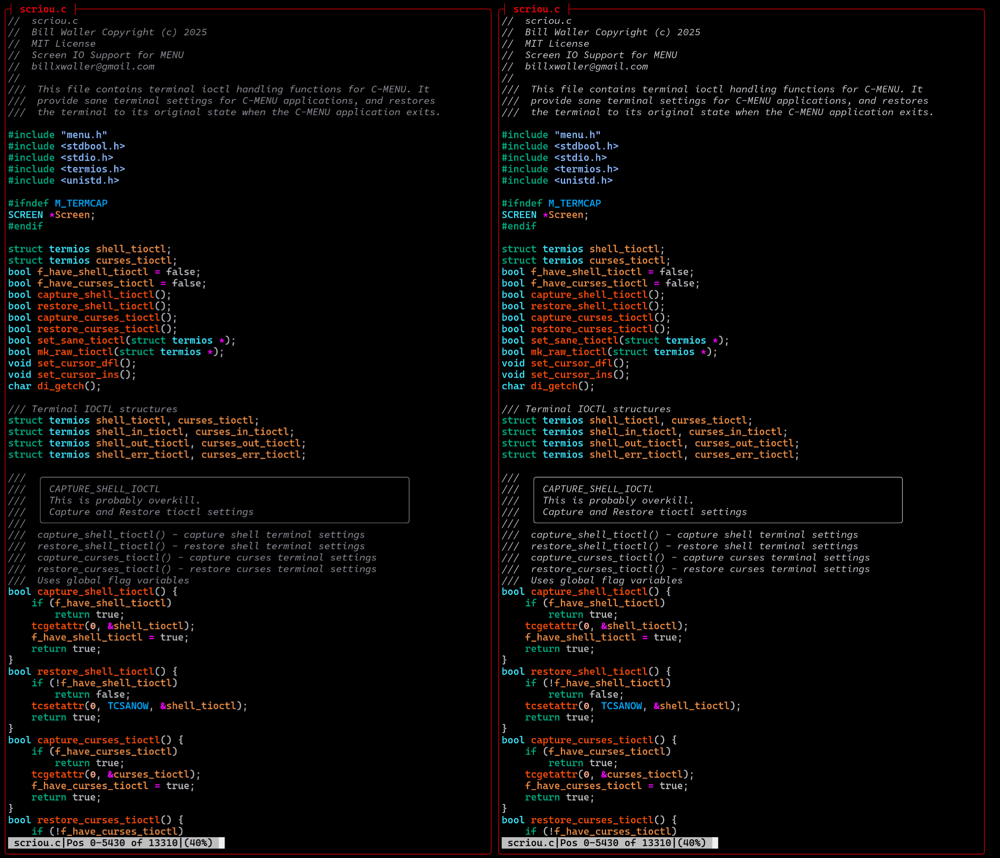
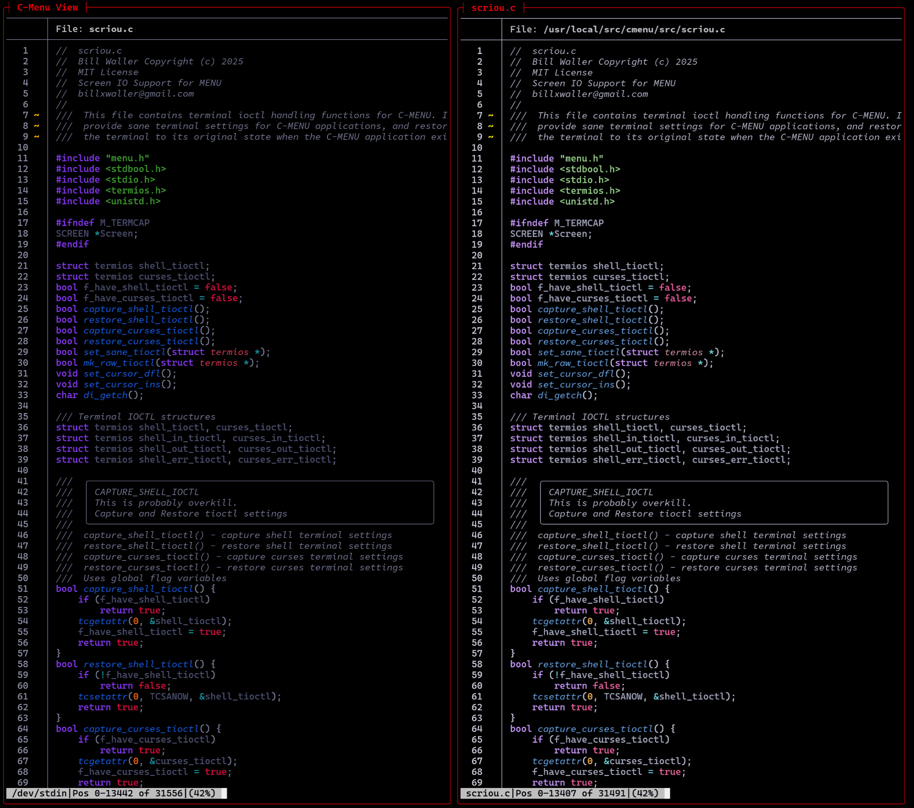
The image on the left, above is a source file highlighted with bat. It seems a little dark and difficult to read. No problem. Crank up the gamma in View and Winner Winner Chicken Dinner!Gray gamma, as you might guess, applies to shades of gray, colors in which red, green, and blue components are of equal value.
Bezold-Brücke hue shift Web Content Accessibility Guidelines (WCAG) 2.2
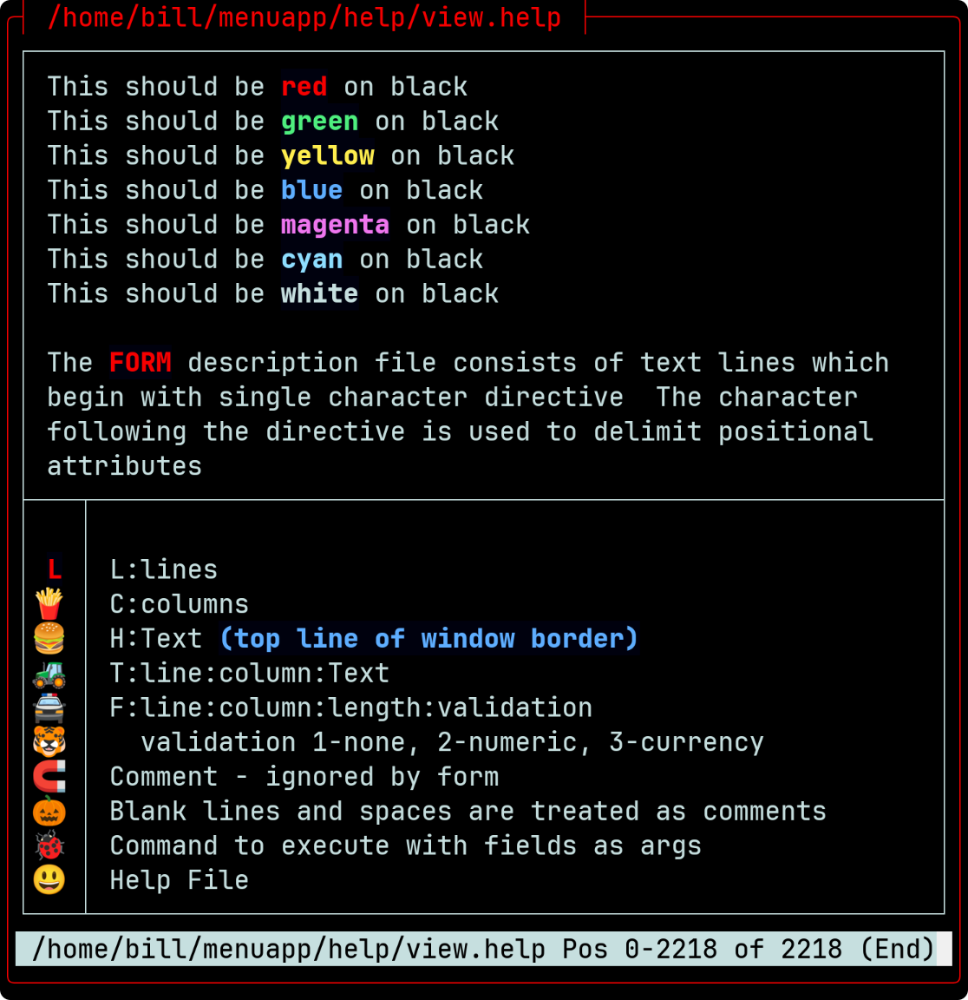
(Australian TV show)
With Unicode glyphs, ANSI escape highlighting, and 3-Channel gamma correction, your application is bound to Wow your clients. Nobody wants an ugly program. Of course, beauty is in the eye of the beholder. That's why we give you control.
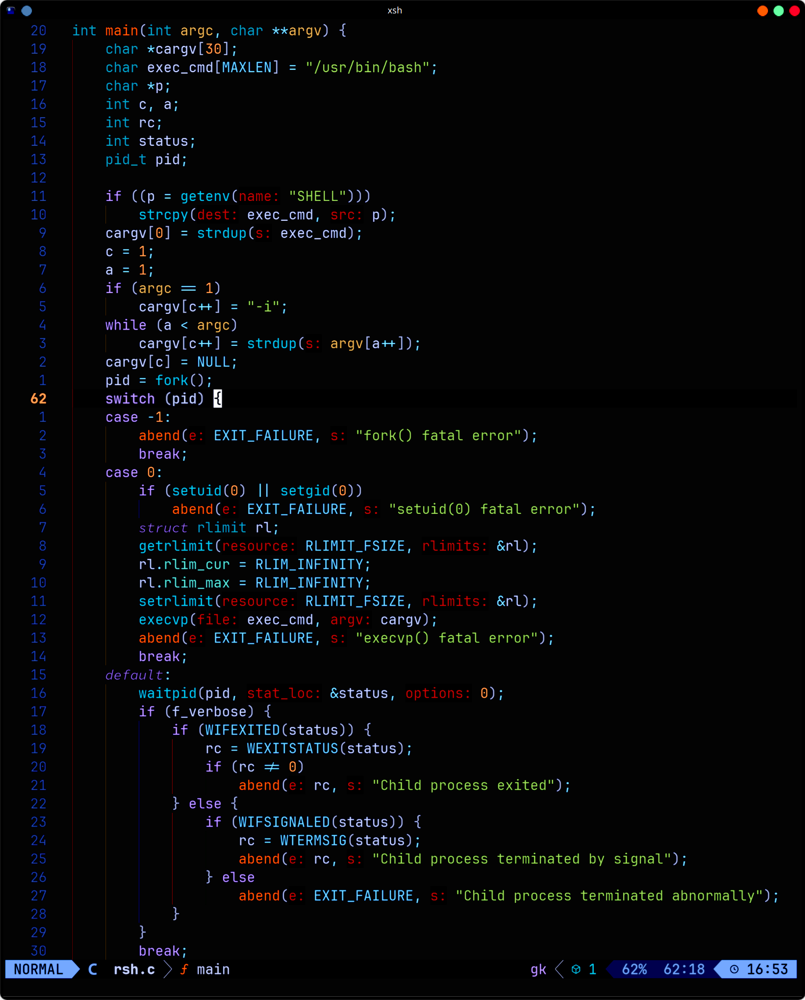
Despite its name, RSH is not a shell. It is a shell runner, which allows you to specify your shell of choice, and provides a consistent environment for running shell scripts and commands. RSH was designed to be invoked from within MENU, FORM, or PICK to execute commands that require elevated privileges, but its functionality extends beyond that.
You can execute commands in either user or root mode, making it a versatile tool for developing application front-ends. RSH ensures that your scripts and executables run in a controlled environment, reducing the chances of unexpected behavior due to differing shell environments. RSH forks and waits for its spawn to complete before returning control to the calling program. When executed under C-Menu's signal handler, it catches and displays the exit status of the command, allowing for better error handling. Instead of using su -c or sudo to run commands as root, you can use rsh -c to achieve the same result in a more streamlined manner. You can literally have root access within a fraction of a second, making it ideal for work that requires frequent switching between user and root modes for various administrative tasks.
Many system administrators and developers find RSH invaluable for tasks that require elevated privileges. RSH eliminates the need to repeatedly enter passwords or switch users, streamlining workflows and improving efficiency. We all know it's not a good idea to run everything as root, but sometimes a user want's to avoid precious seconds it takes to enter passwords for su. With RSH, it takes three keystrokes to enter root mode and two keystrokes to get out.
Here's an example of the proper way to use RSH.
 Notice that the bash prompt changes from green to red as a reminder that you are wielding a loaded gun with the safety off. In this state, it only takes a minor typo. You mean to type "rm -r tmp/\*", but inadvertently put an extra space after tmp. I can't even type the resulting expression.
Notice that the bash prompt changes from green to red as a reminder that you are wielding a loaded gun with the safety off. In this state, it only takes a minor typo. You mean to type "rm -r tmp/\*", but inadvertently put an extra space after tmp. I can't even type the resulting expression.
Be very careful when using RSH in setuid root mode. Keep the executable protected in your home directory with appropriate permissions to prevent promiscuous access by unauthorized users. RSH should be provided only to trusted users who understand the implications of executing commands with elevated privileges. Used inappropriately, it can lead to system instability or security vulnerabilities.
RSH is as safe or unsafe as we choose to make it. It requires root access to install, and the installer should make sure it cannot be used by other users. If you are reading this, you know how to do that. Please use it responsibly.

You will notice that the build was completed under normal user privileges. Only the install portion required root access. We typed "xx" to assume root privileges, installed the package, and then immediately reverted to normal user access by typing "x".
lf is a utility included with C-Menu that allows you to list files in a directory based on regular expression patterns. It provides a powerful way to search for files that match specific criteria
lf is a streamlined, efficient, and easy-to-use alternative to find addressing the majority of use cases in which the complexity of find is not required.
lf is not intended to replace find, but to give the developer a simple, focused, and robust tool for listing files based on regular expressions.
Create and manage multiple menus, forms, and pickers
Define interfaces using simple configuration files
Perfect for shell scripting, command-line, and terminal based applications
Made for Linux and Unix-like operating systems
Blazingly fast, even on older hardware
Text-based user interface (TUI) using ncurses
Easily customize menu options and actions
Any level of sub-menus
Navigation using keyboard inputs the way God intended
Configurable appearance and behavior
Cross-platform compatibility
MIT License - Open-source and free to use

User's can have multiple runtime configurations. In the snippet above, the standard ISO 6429 / ECMA-48 colors have been redefined and orange has been added.